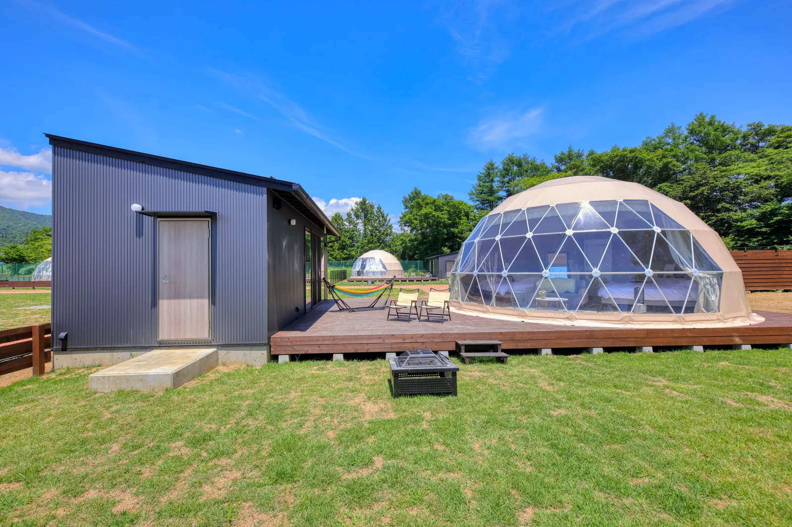
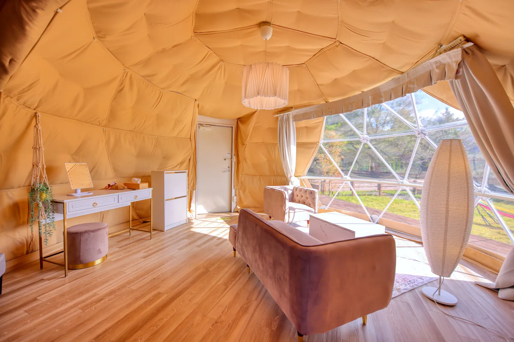
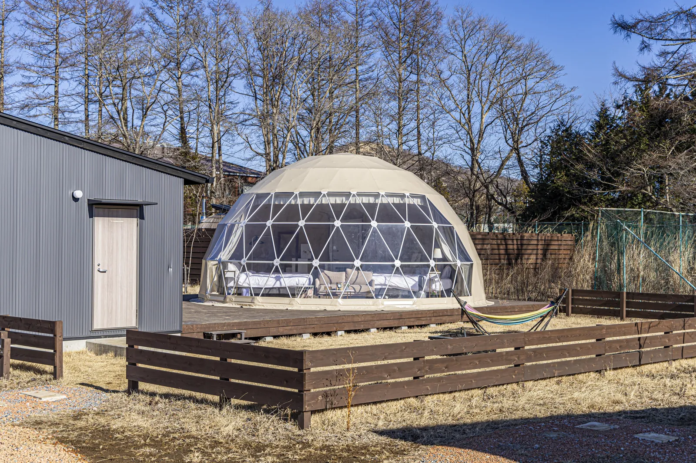
STANDARD DOME
Standard Dome
最受情侶與一家人旅行歡迎的標準圓頂房型。直徑 7m 的寬敞 Dome，配有約 100㎡ 專屬私人庭院。
每間客房都有獨立的專用用餐棟，內設 廁所、淋浴間及簡易廚房，兼具 Glamping 的自然感與住宿舒適度。
情侶・家庭推薦約100㎡私人庭院私人用餐棟廁所・淋浴・簡易廚房
TOTONOI 全部僅 7 棟。圓頂帳篷設有空調、專用用餐空間、獨立淋浴間與廁所。每種房型都重視私人空間與專屬庭院。從住宿空間感受富士山，是這裡最重要的體驗。
四種房型都重視私人空間與專屬庭院。從情侶旅行、一家人，到兩個家庭或朋友團體，都能找到合適的住宿方式。



最受情侶與一家人旅行歡迎的標準圓頂房型。直徑 7m 的寬敞 Dome，配有約 100㎡ 專屬私人庭院。
每間客房都有獨立的專用用餐棟，內設 廁所、淋浴間及簡易廚房，兼具 Glamping 的自然感與住宿舒適度。
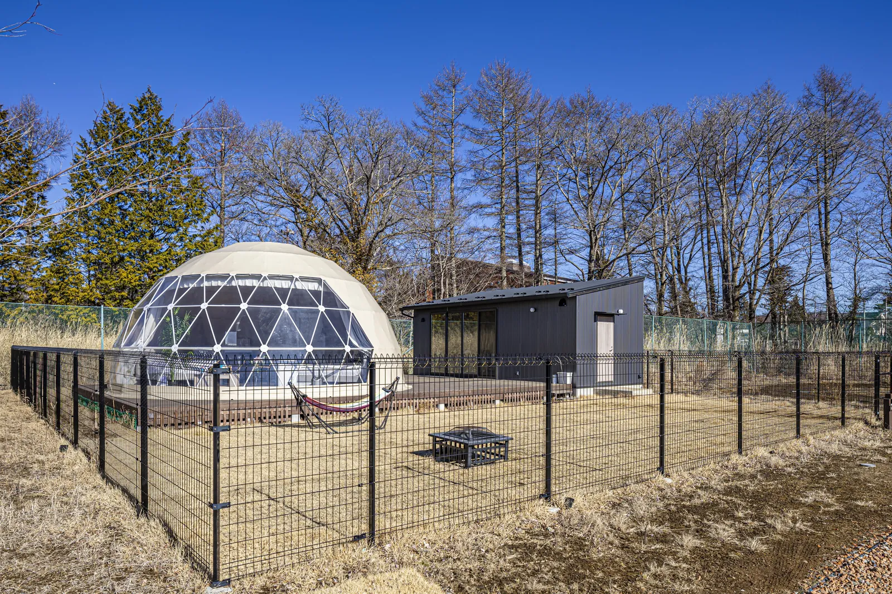
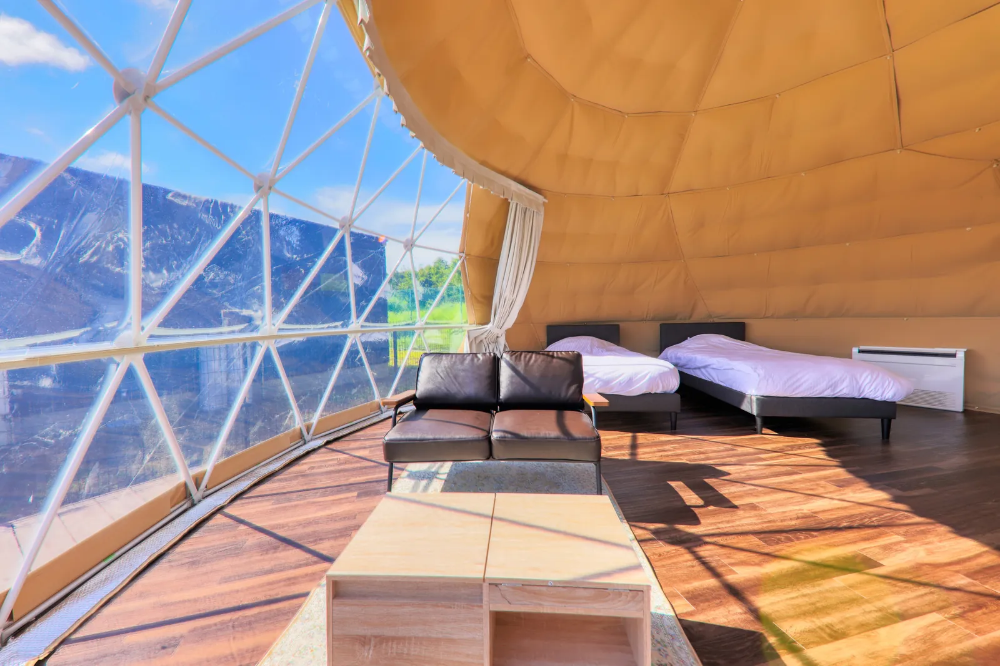
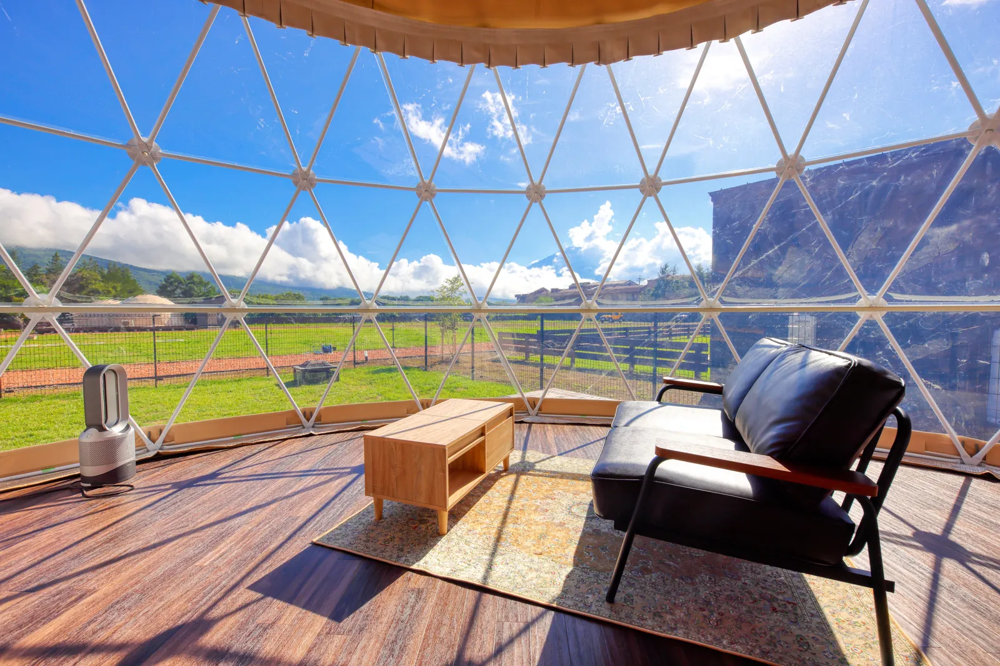
主要為帶愛犬同行的旅客設計，擁有可讓狗狗自由活動的私人 Dog Run。即使沒有帶狗狗，也可以入住。
適合希望享受更寬敞私人庭院空間的家庭或朋友。5 人以上入住時使用加床（Extra Bed）。
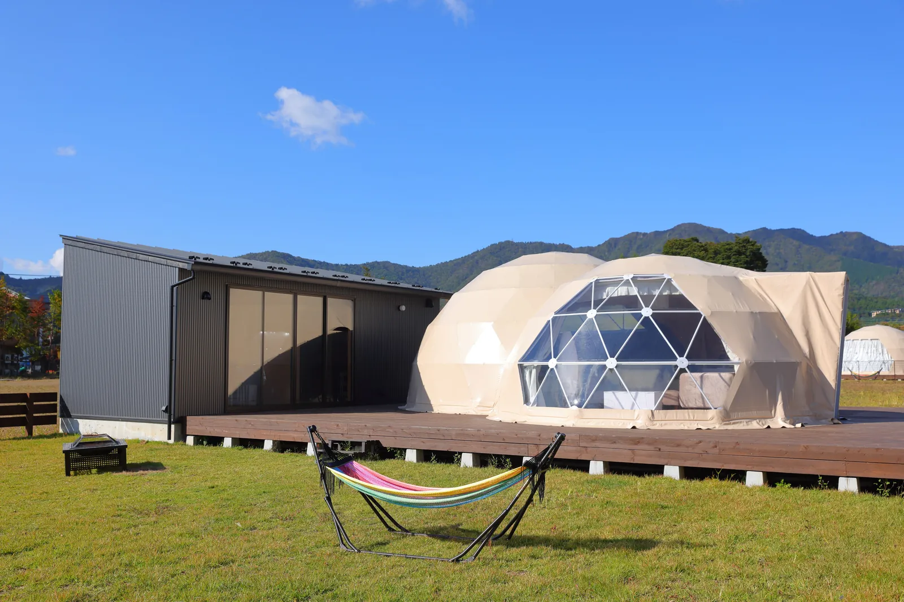
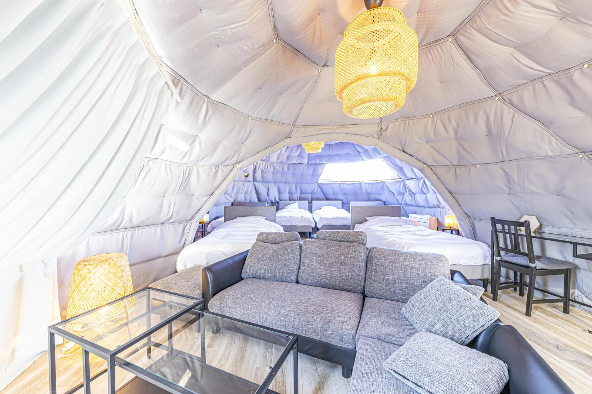
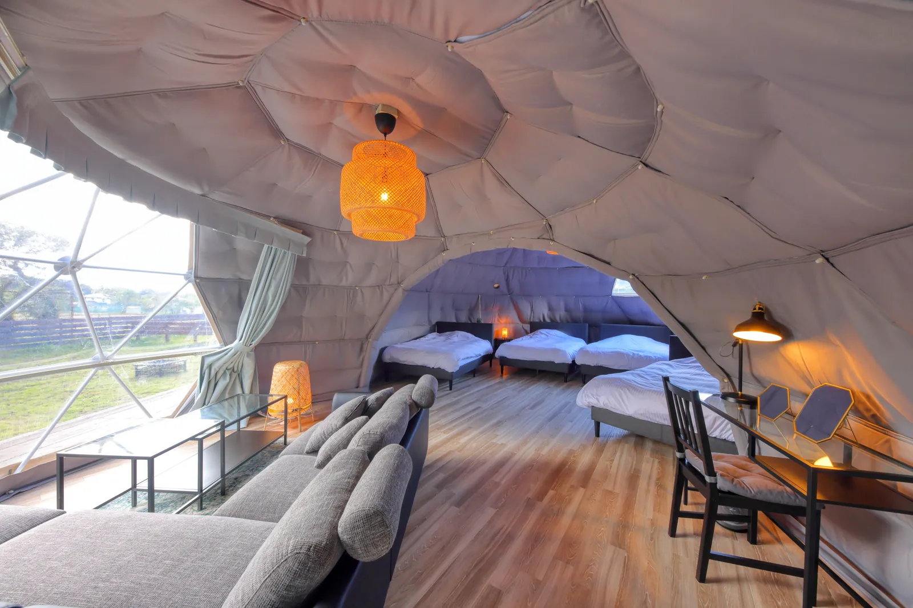
兩座 Dome 相連，比 Standard Dome 更寬敞。擁有約 150㎡ 專屬私人庭院，兩個家庭同行或朋友團體旅行尤其推薦。
在同一客房內保有各自活動空間，也能一起享受山中湖的夜晚。5 人以上入住時使用加床（Extra Bed）。
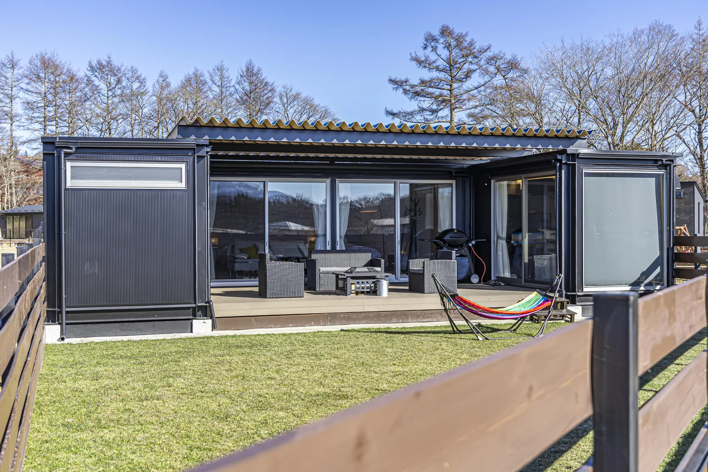
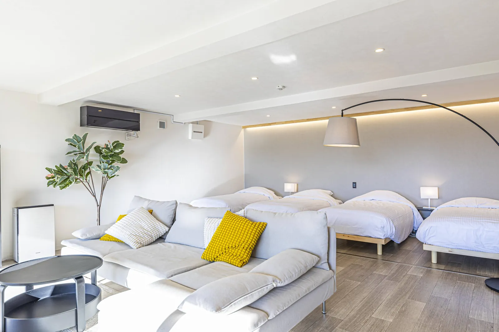
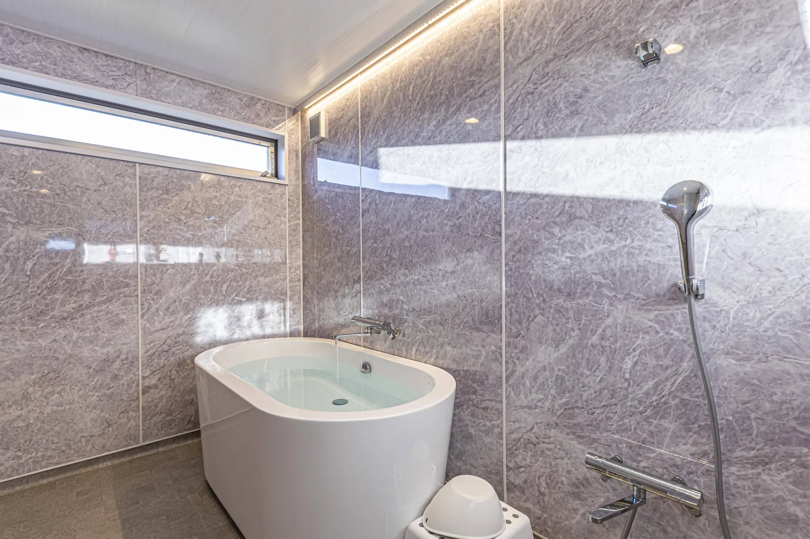
與 Dome 不同，是以貨櫃打造的 Cottage 房型。設有有頂的用餐空間，下雨天也能舒適享用 BBQ，並配備浴缸，特別適合想慢慢放鬆的旅客。
房型亦設有 Dog Run，不過即使沒有帶狗狗，也可以入住。
客房除了冷暖氣及私人空間，也備有洗手用品、毛巾、洗手間及簡易廚房設備，讓第一次 Glamping 的旅客也能安心入住。
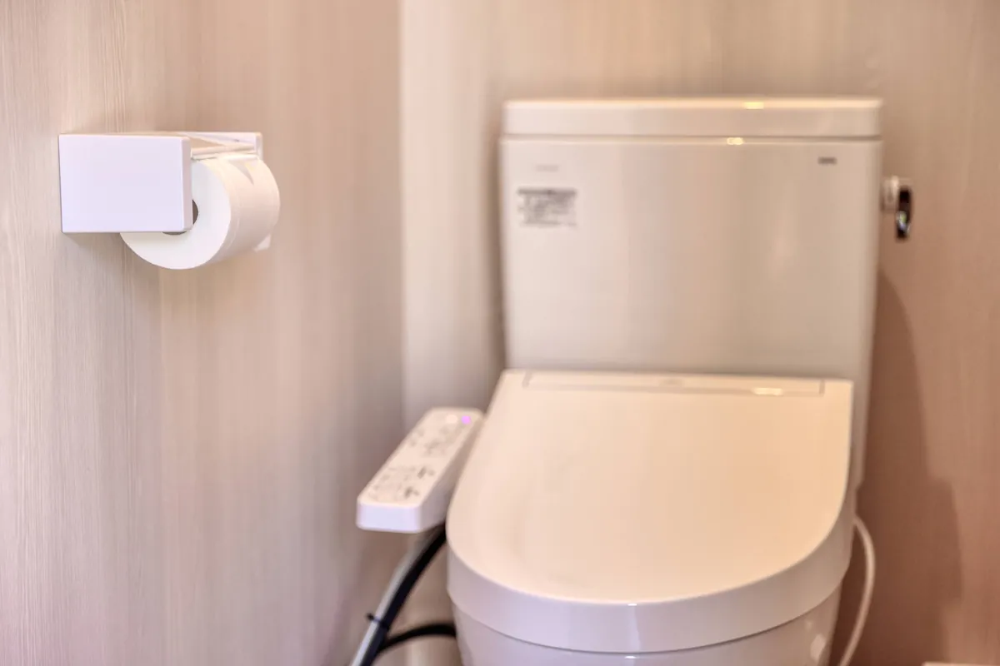
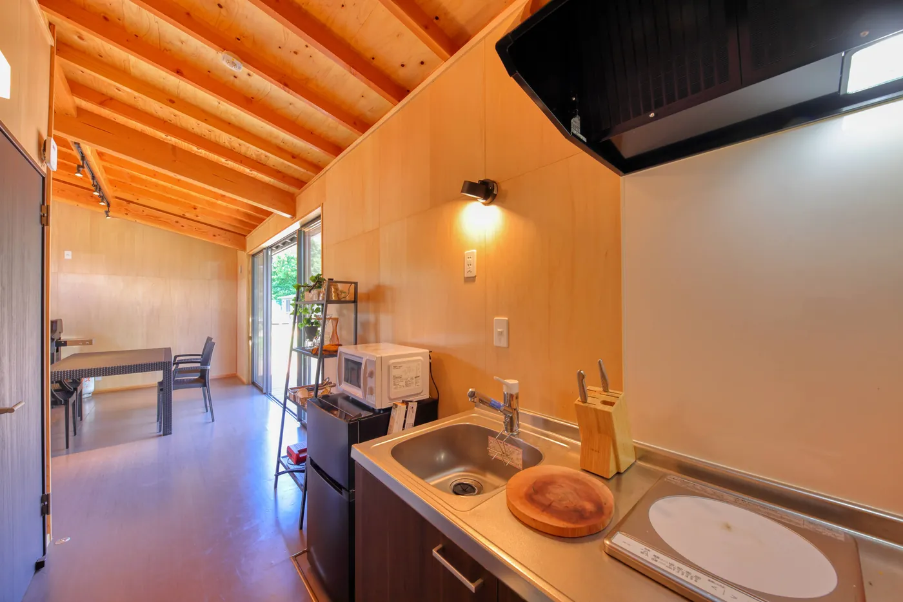
關於客房、交通、餐點或住宿安排，都可以透過官方 Instagram 私訊查詢。